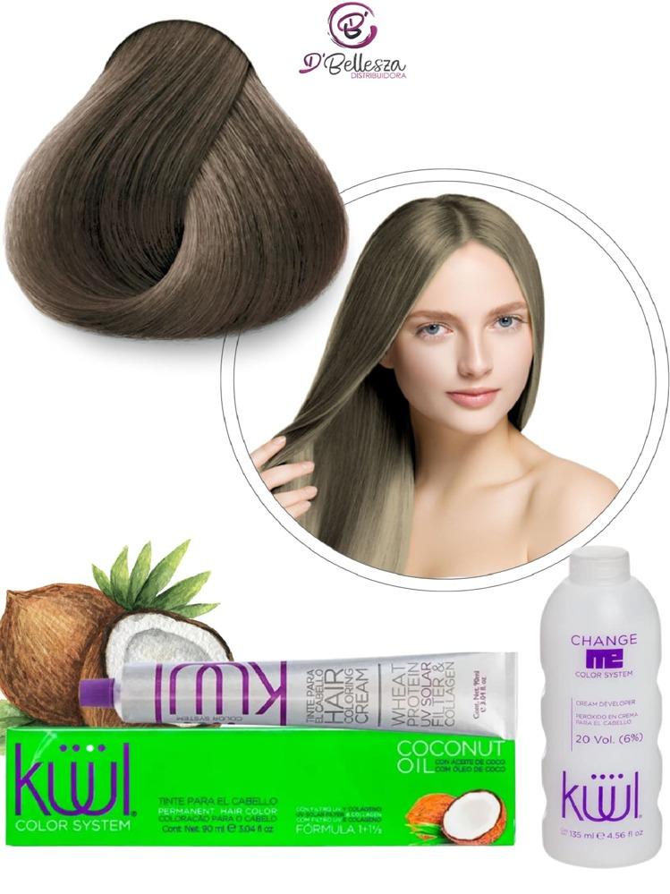
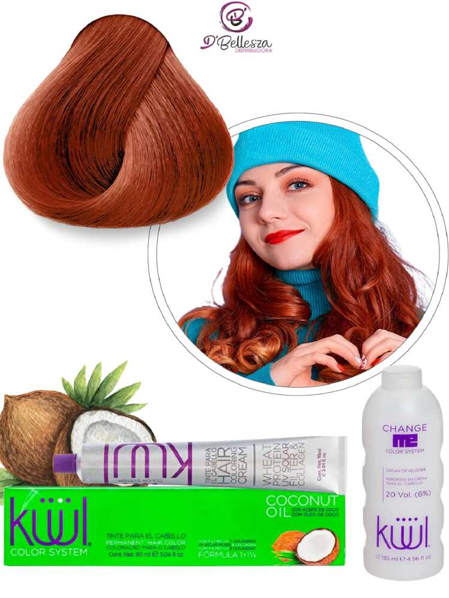
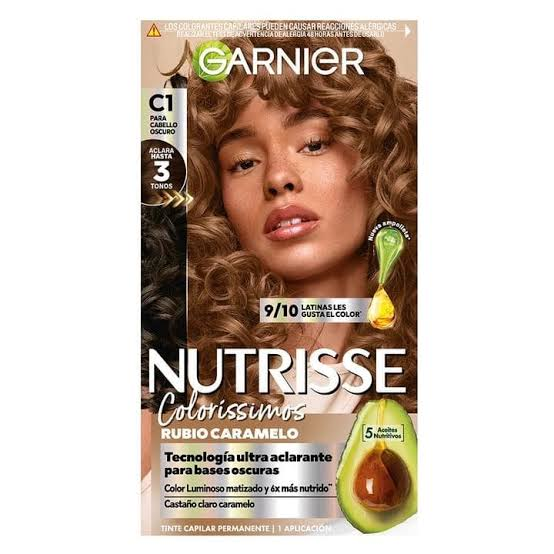
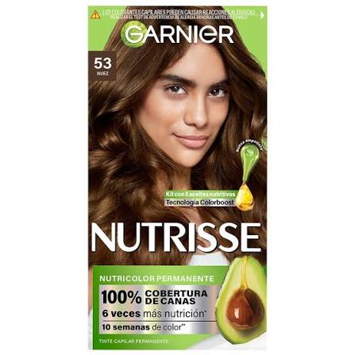
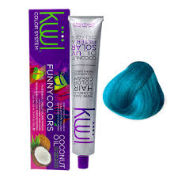

PROMOCION DE TINTE COLORES NATURALES(RUBIO Y CASTAÑO), 2X1 POR TEMPORADA DE OFERTAS.

Tinte castaño, perfecto para un look natural y clasico

Tinte pelirojo, perfecto para un look atrevido y con estilo

Tinte rubio quemado, perfecto para un look natural y distintivo

Tinte castaño oscuro, perfecto para un look natural

Tinte azul, look atrevido y para hacerse notar